Liceum Ogólnokształcące
Kierunki
Zapoznaj się z kierunkami kształcenia
Profesjonalna Nauka
Uczymy się od najlepszych
Podczas nauki przedmiotów mundurowych stawiamy na najwyższą jakość kształcenia oraz praktyczne przygotowanie do służby. Zajęcia prowadzą doświadczeni profesjonaliści – byli i czynni funkcjonariusze oraz specjaliści z różnych dziedzin, którzy łączą wiedzę teoretyczną z realnym doświadczeniem. Dzięki ich zaangażowaniu i indywidualnemu podejściu uczniowie zdobywają umiejętności potrzebne do pracy w służbach mundurowych i ratowniczych.
WOJSKO POLSKIE
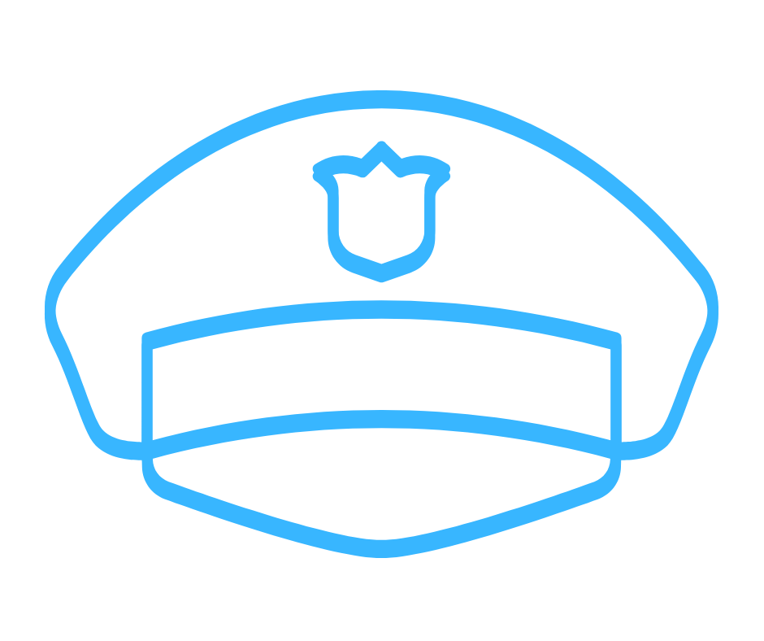
POLICJA
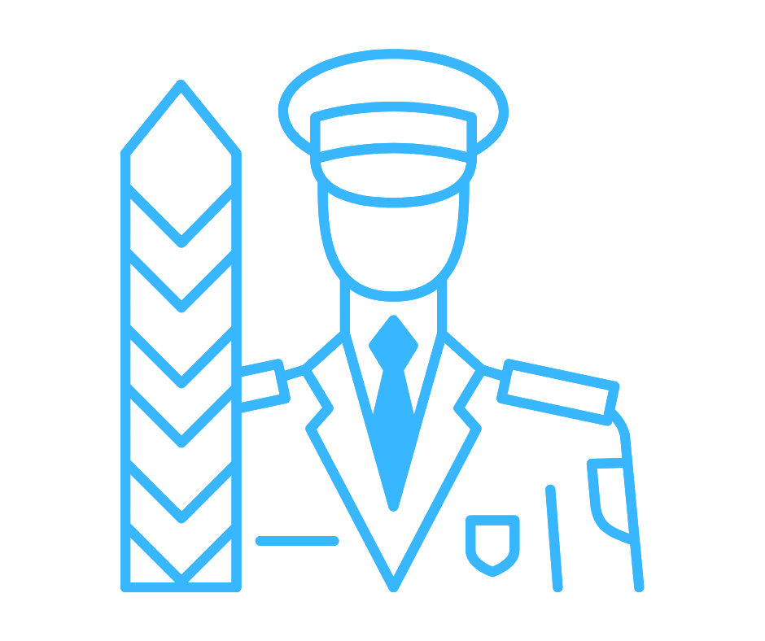
STRAŻ GRANICZNA
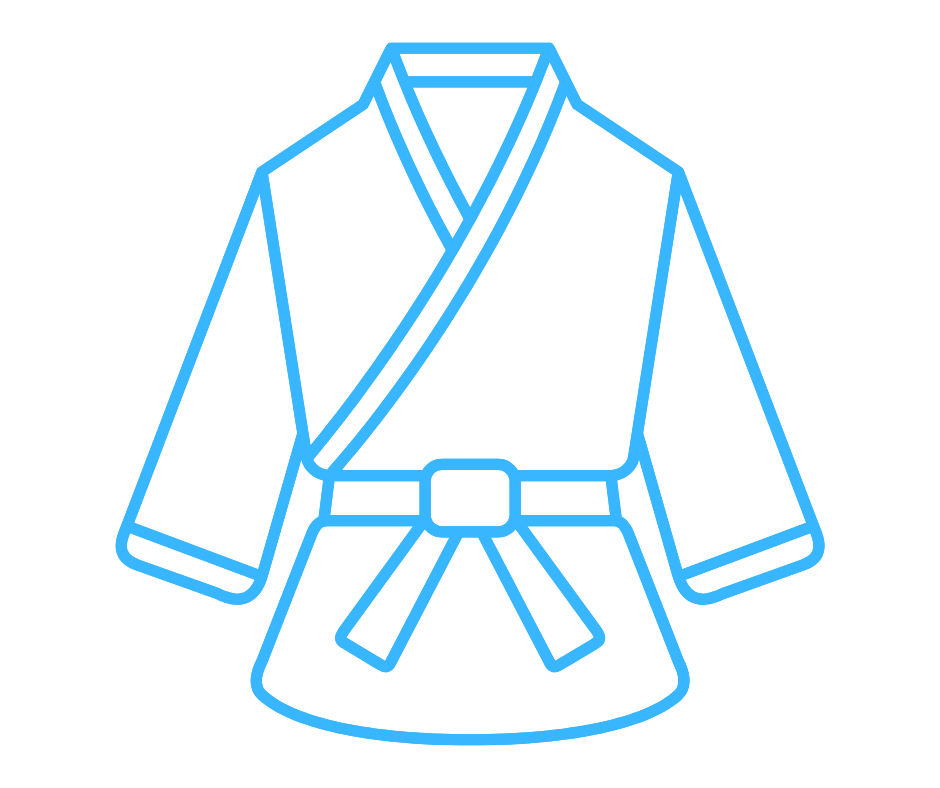
SZTUKI WALKI
Sztuki Walki
Poznaj Techniki i Taktyki Interwencji
W naszym liceum uczniowie mają możliwość nauki różnych technik sztuk walki, rozwijając sprawność fizyczną, dyscyplinę oraz pewność siebie. Zajęcia prowadzi mistrz Artur Serafin – doświadczony instruktor i pasjonat, który od lat szkoli młodzież w zakresie samoobrony oraz walki wręcz. Treningi odbywają się w bezpiecznych warunkach, z naciskiem na technikę, skuteczność i odpowiedzialne podejście do sztuk walki.
Jak szkolimy?
Nowoczesny Sprzęt Specjalistyczny
Do nauki technik interwencji wykorzystujemy nowoczesny, specjalistyczny sprzęt treningowy, który zapewnia bezpieczeństwo i realizm zajęć. Uczniowie mają dostęp m.in. do umundurowania, środków ochrony osobistej oraz atrap wyposażenia stosowanego w służbach mundurowych. Dzięki temu mogą ćwiczyć scenariusze działania w sytuacjach kryzysowych w warunkach zbliżonych do rzeczywistych.
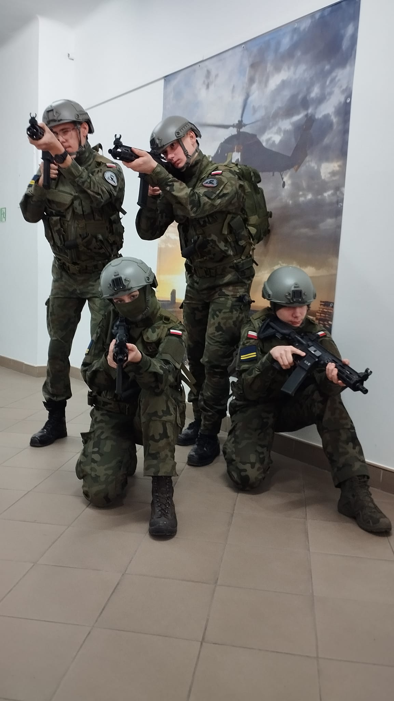
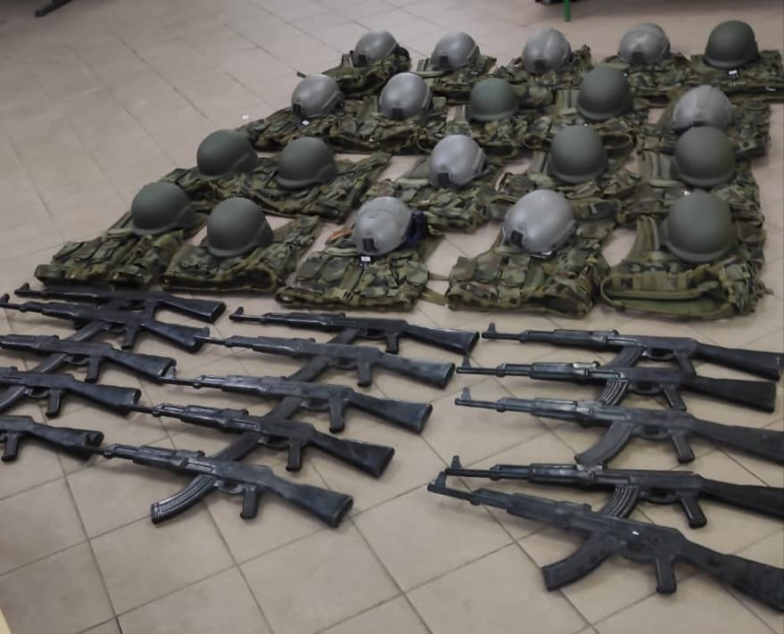
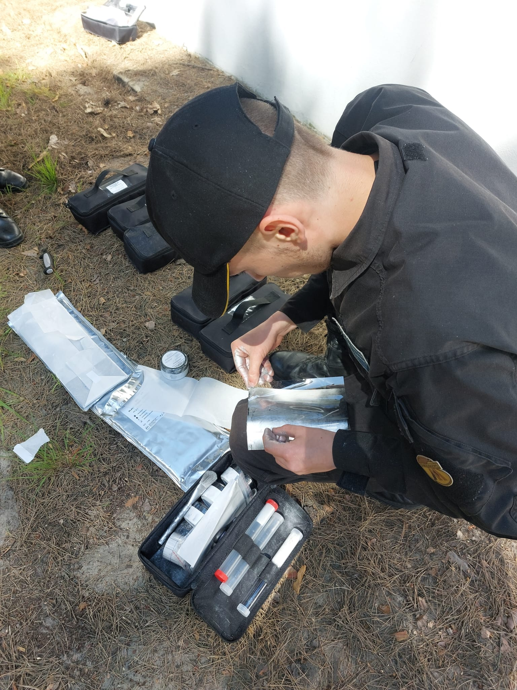
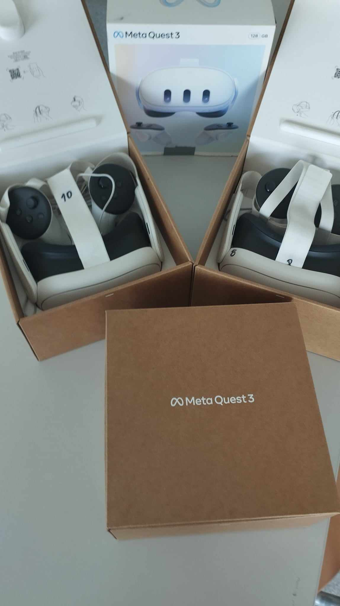
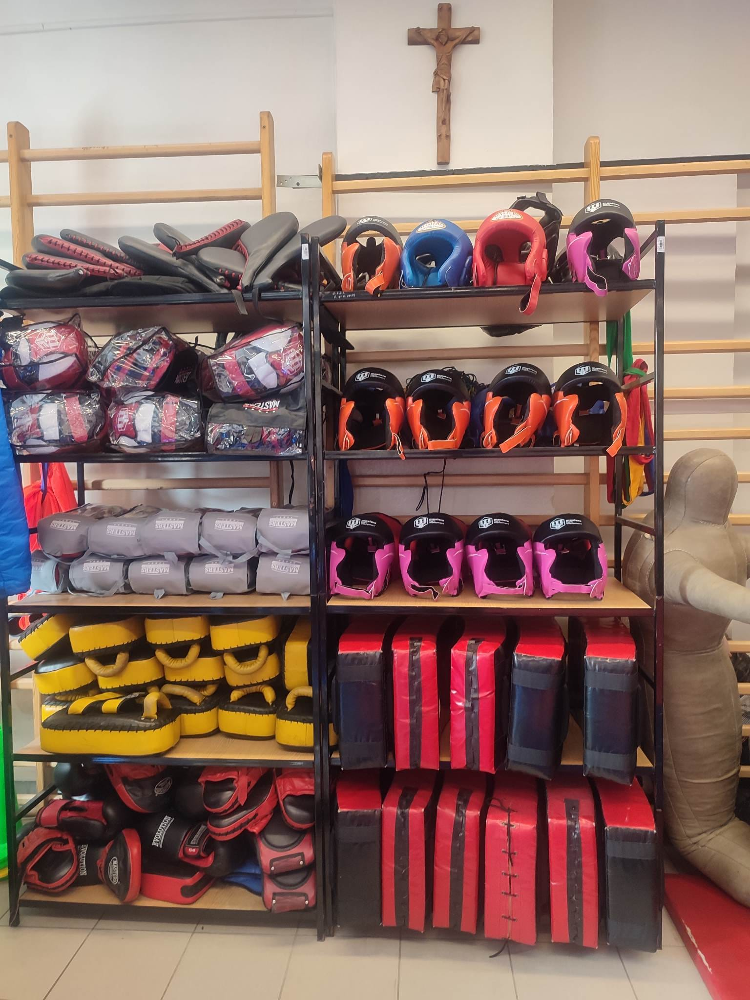
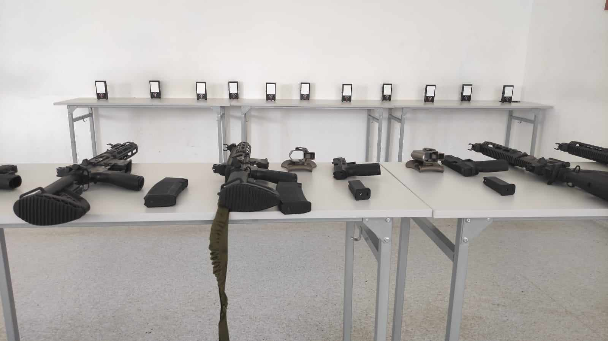
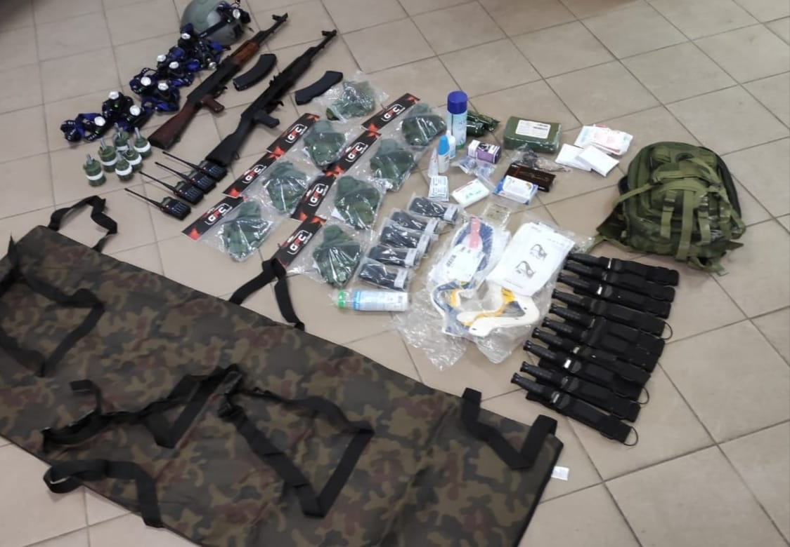
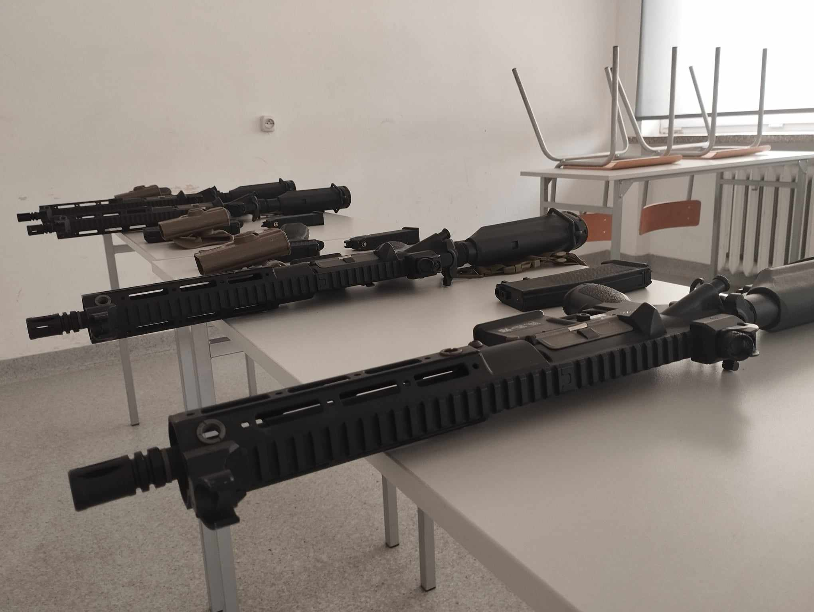
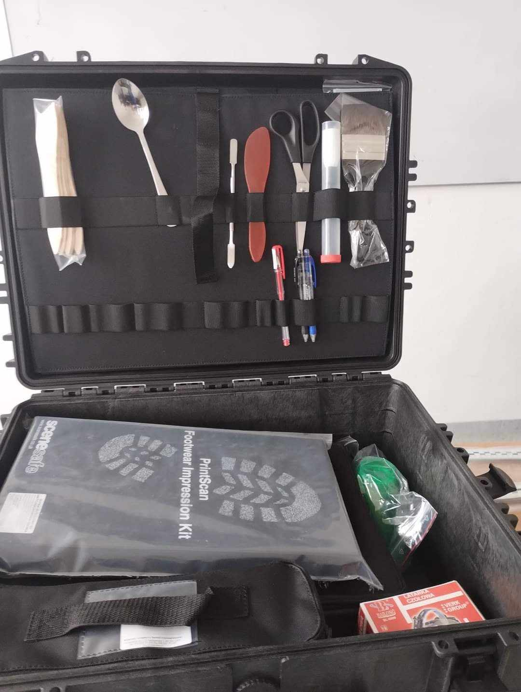
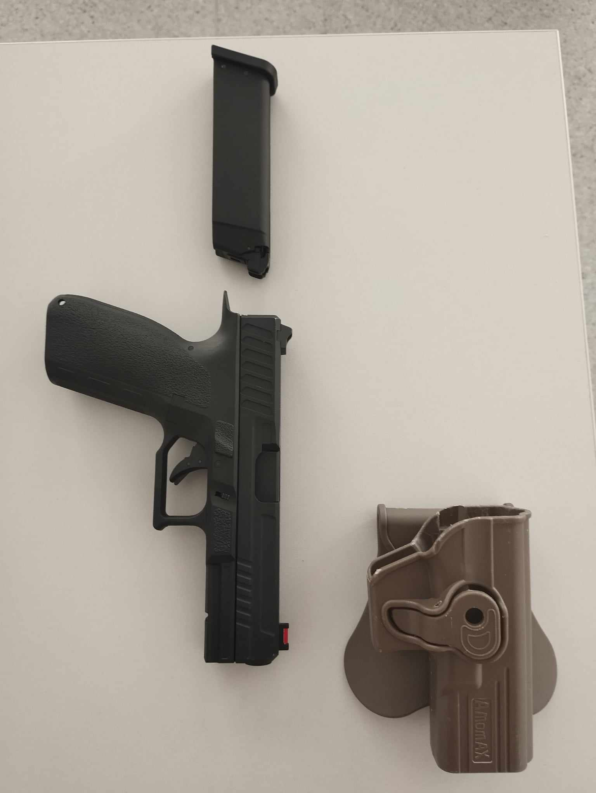
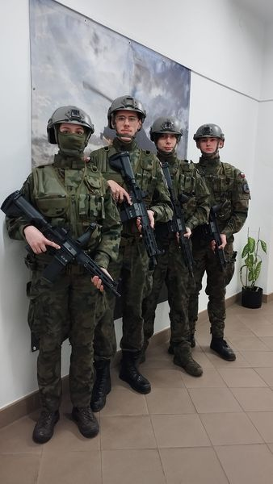
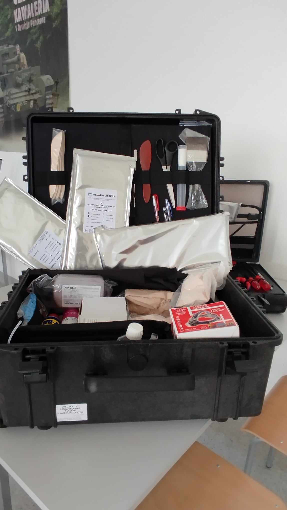
Szkolenie z obsługi dronów
Drony
- Drony to bezzałogowe statki powietrzne, które mają szerokie zastosowanie we współczesnym świecie.
- Drony są wykorzystywane przez wojsko do rozponawania, monitorowania zadań bojowych.
- Nauczanie dronów w Mundurówce umożliwia zdobycie praktycznych umiejętności.
- Uczniowie wykorzystują umiejętności z zakresu operowania dronami i zarządzania misjami.
Kim jesteśmy
Łączy nas wspólna pasja
- Działamy od 2010 roku.
- Jesteśmy szkołą niepubliczną o uprawnieniach szkoły publicznej dla młodzieży.
- Nauka trwa 4 lata, kończy się egzaminem maturalnym.
- Oprócz przedmiotów ogólnokształcących szkolimy w zakresie przedmiotów specjalistycznych.
-
Uczniowie uczestniczą w obowiązkowych zajęciach, które znajdują się na świadectwie ukończenia szkoły:
- przygotowanie wojskowe
- edukacja policyjna
- edukacja straży granicznej
- taktyka i techniki interwencji
- angielski w służbach mundurowych
Poznaj MUNDURÓWKĘ
Wirtualny spacer
Obejrzyj jak wygląda i funkcjunuje nasza szkoła.
@locsm_zamosc Chodźcie z nami na spacer!
Nasze współprace
Wierzymy, że każda współpraca do klucz do rozwoju umiejętności i zdobywania praktycznego doświadczenia...